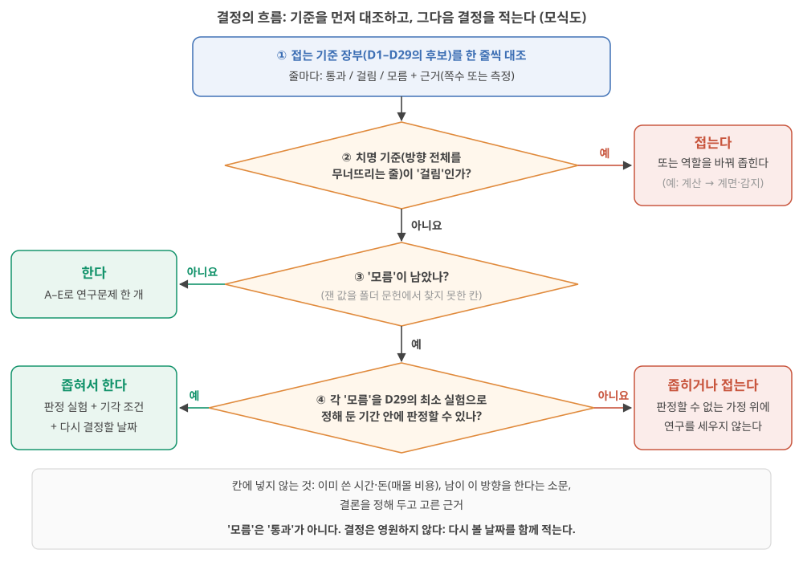
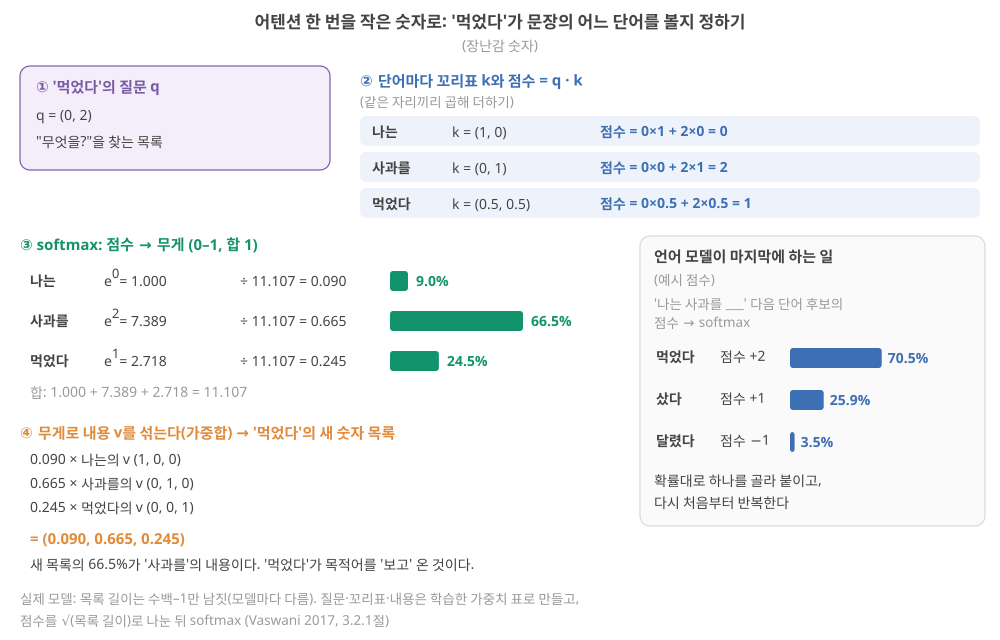

Day 57. 결정의 틀(핵심 마무리)과 트랜스포머·어텐션(확장 읽기)
Phase 5 · 나는 무엇을 연구해야 하는가
이번 질문 — 연구 결정을 어떤 틀로 쓰고, 트랜스포머의 어텐션은 작은 숫자로 무엇을 하나?
왜 배우나 (내 소재 연구와의 연결) — 연구를 계속할지, 범위를 좁힐지, 접을지를 감정이 아니라 내 접는 기준 장부의 줄마다 판정(통과·걸림·모름)으로 정하는 순서를 익힙니다. 내 소재에서 어느 줄이 '모름'인지 보이면 첫 실험(예: 원시 입력 기준선 비교, 소자 간 CV 측정)을 고를 수 있습니다. 후반 확장 읽기는 attention 논문을 만날 때를 위한 것입니다.
오늘의 장면 (입력 → 내부 변화 → 출력) — 입력 = 접는 기준 장부(줄마다 근거·판정) → 하는 일 = 치명 기준을 대조 전에 표시 → 걸림·모름 세기 → 모름을 정해 둔 기간 안에 판정할 수 있는지 확인 → 출력 = 한다 / 좁혀서 한다 / 접는다와 다시 결정할 날짜, A–E 연구문제. (확장: 단어 숫자 목록 → 내적 점수 → softmax 무게 → 가중합 = 어텐션 출력.)
오늘 반드시 — '모름'은 '통과'가 아니며, 치명 기준은 대조 전에 고른다. 결정은 되돌릴 수 있게 다시 결정할 날짜와 판정 실험·기각 조건을 함께 적는다. 좋은 A–E는 A 한 문장, C 틀릴 수 있음, D 숫자, E 다른 사람의 행동이다.
나중에 더 봐도 되는 것 — 3구간 전체(트랜스포머·LLM·어텐션 손계산)는 확장 읽기입니다. 결정에 꼭 필요한 입력이 아니므로 attention이 나오는 논문을 만날 때 읽어도 됩니다. A–E 양식의 5칸 전부를 채우는 것도 연구 방향이 정해진 뒤에 해도 됩니다.
다음으로 넘어가는 기준 — '오늘 반드시'를 내 말로 한두 문장 말할 수 있으면 됩니다. 나머지는 뒤의 Day에서 다시 나옵니다.
이후 쓰이는 곳 — 4구간의 RNN·RC·어텐션 비교와 물리 구현 판단, 내 답 양식의 결정·A–E 칸, 접는 기준 장부의 다음 대조
지난 학습 복습
지난 학습 단위(Day 56 · 기각 조건을 숫자로(차이의 95% 구간과 실용 문턱), 여러 번 보기, 새 소자가 필요한가, 성공·실패가 남기는 것)의 핵심을 다른 예로 확인합니다. 고르는 즉시 맞았는지와 이유가 보입니다. 틀려도 아래 학습자료는 그대로 열려 있고, 틀린 문제에는 다시 볼 곳이 붙습니다.
사전 테스트 (선택)
사전 테스트 펼치기 · 배우기 전에 짐작해 보는 문제 (선택)
학습자료
Phase 5의 마지막 단계입니다. 지금까지 따라온 물리 reservoir computing(RC)을 한 번 더 짧게 말하면, 고정된 물리계(이온 소자)가 입력 이력을 내부 상태로 바꾸고, 그 상태에 가중치를 곱해 더하는 마지막 층인 readout만 데이터로 학습하는 방식이었습니다(Day 13 기초). Day 53–54에서 가설 후보를 세웠고, 지난 학습(Day 55–56)에서 각 후보를 가장 싸게 죽일 수 있는 최소 실험과 기각 조건을 봤습니다. 이번에는 그 재료로 다음 실험의 순서를 정하는 법을 봅니다. 이 연구를 할 가치가 있는가, 좁혀야 하는가, 접어야 하는가를 적는 양식이 있지만, 그 결정은 선택이고 되돌릴 수 있습니다. 핵심 과정을 마쳤다는 표시는 결정이 아니라, 배운 사슬을 한 장으로 정리하고 내 소재에서 무엇을 측정할 수 있는지 질문 하나를 만드는 것입니다.
자료는 두 겹입니다. 핵심 과정의 마무리는 1–2구간과 6구간·총정리입니다. 1–2구간은 결정하는 방법(접는 기준을 먼저 대조하고, 결정을 적고, "한다" 또는 "좁혀서 한다"라면 연구문제 하나를 A–E 양식으로 쓰기), 6구간은 결정 적기와 회고입니다. 확장 읽기는 3–5구간입니다. 트랜스포머·LLM·어텐션은 무엇이고, RC나 물리 소자로 그것을 하려는 시도는 어디까지 왔나?(3–4구간) RC의 의미가 줄어든다면 이온 컴퓨팅은 어디로 가나?(5구간) 확장 읽기는 결정에 꼭 필요한 입력이 아닙니다. 핵심을 마친 뒤 이어 읽어도 되고, attention·차세대 후보가 나오는 논문을 만날 때 돌아와 읽어도 됩니다. 결정의 답은 자료가 아니라 내가 씁니다.
이 주제의 질문 순서 — 이번 Day 57에서는 구간 1–3만 읽습니다. 나머지는 Day 58에서 이어집니다(구간 번호는 원래 한 묶음이던 순서 그대로입니다).
- 한다·좁혀서 한다·접는다는 각각 무엇이고, 어떤 순서로 판단하나? '모름'과 이미 쓴 시간은 어떻게 다루나? → 구간 1
- A–E 연구문제 양식의 각 칸은 무엇에 답해야 하나? 좋은 A–E의 조건은? → 구간 2
- (확장) 언어 모델은 무엇을 예측하나? 단어는 어떻게 숫자가 되고, 어텐션은 어떤 계산인가? → 구간 3
- (확장) RNN·RC·어텐션은 무엇이 다른가? 물리 소자·RC로 어텐션이나 트랜스포머를 구현한 시도는 무엇을 보였고 무엇을 보이지 못했나? (Day 58에서)
- (확장) RC의 의미가 줄어든다면 기술은 어디로 가나? 차세대 이온 컴퓨팅 후보는 무엇을 약속하고 아직 무엇이 없나? (Day 58에서)
- 배운 것을 어떻게 한 장과 질문 하나로 정리하고, (원하면) 결정을 어떻게 적나? 이 공부를 시작할 때의 나와 무엇이 달라졌나? (Day 58에서)
1. 결정의 세 갈래: 한다, 좁혀서 한다, 접는다
상황. 내 접는 기준 장부 여덟 줄 가운데 둘은 "걸림", 대부분은 "모름"입니다. 이 연구를 계속해야 할까요, 범위를 줄여야 할까요, 접어야 할까요? 이 구간은 그 결정을 감정이 아니라 줄마다의 판정과 정해진 순서로 내리는 연습입니다.
이 구간을 읽고 나면 장부의 줄마다 통과·걸림·모름을 붙이고 치명 기준을 대조 전에 표시하는 이유를 말하며, 그림 1의 흐름(치명 기준이 걸렸나 → 모름이 남았나 → 판정할 수 있나)을 따라 가상의 장부 하나를 한다·좁혀서 한다·접는다 가운데 하나로 판정하고, '모름'과 매몰 비용을 다루는 규칙을 말할 수 있다.
왜 순서가 중요한가. 이 Day의 내 답 양식 안내는 "먼저 Day 1–2에 적어 둔 접는 기준을 가져와 하나씩 대조하고, 그다음에 결정을 적는다. 순서를 바꾸면 결정이 감정으로 내려진다"고 적습니다. 결론을 먼저 정하면, 장부의 줄 가운데 그 결론을 뒷받침하는 줄만 눈에 들어오기 때문입니다. Day 53–54에서 본 확증 편향입니다(Day 54 5구간 ⑥: 애착과 확증 편향). 이 교재는 Day 1–2부터 날마다 "접는 기준 후보"를 한 줄씩 장부에 적어 왔고, Day 55–56에서 그 줄을 숫자로 적는 법을 봤습니다. 짧게 다시 말하면, 기각 조건은 결과를 보기 전에 숫자로 적은 "이 결과면 접는다"였습니다(Day 55 기초: 기각 조건). 이번에는 그 장부를 펼쳐 놓고 결정하는 순서를 봅니다.
할 것 / 좁힐 것 / 접을 것: 판단 기준
먼저 낱말 둘: 줄마다의 판정과 치명 기준. 장부의 한 줄은 "이 조건이 걸리면 이렇게 하지 않는다"는 문장입니다(예: "delay tap 기준선을 못 이기면 '계산 소자'라 쓰지 않는다"). 결정할 때는 줄마다 판정을 하나 붙입니다.
- 통과: 근거(날과 쪽수, 또는 측정)가 있고, 그 조건이 걸리지 않았다.
- 걸림: 근거가 있고, 그 조건이 걸렸다.
- 모름: 판정할 근거가 아직 없다(재지 않았거나 문헌에서 찾지 못했다).
치명 기준은 장부의 줄 가운데 "이것이 걸리면 방향 전체가 무너지는 줄"입니다. 어느 줄이 치명인지는 내 방향(계산인가, 계면인가, 소재 물리인가)에 따라 달라지므로, 대조 전에 내가 표시합니다.
흐름 그림부터. 그림 1이 이 낱말들로 결정을 내리는 순서입니다. 읽는 법: 위에서 아래로, 주황 마름모(질문)마다 "예/아니요"를 따라갑니다. 초록 상자가 계속하는 쪽, 빨강 상자가 접거나 좁히는 쪽이고, 맨 아래 회색 상자는 판정에 넣지 않는 것입니다.

세 갈래의 뜻(이 교재의 정의). 그림 1의 출구를 말로 적으면 이렇습니다. 해석
- 한다(그림 1 ③에서 아니요): 치명 기준이 걸리지 않았고, 판정해야 할 '모름'도 남지 않았다. 치명이 아닌 줄이 걸렸다면 그 줄에 해당하는 주장이나 응용만 빼고 간다. A–E(2구간)로 연구문제 하나를 쓸 수 있다.
- 좁혀서 한다(그림 1 ④에서 예): 치명 기준은 걸리지 않았지만 '모름'이 남았고, 그것을 정해 둔 기간 안의 최소 실험으로 판정할 수 있다. 또는 걸린 줄을 피하려면 범위를 줄여야 한다. 줄이는 방향은 넷이다(아래 표). 판정 실험·기각 조건·다시 결정할 날짜를 함께 적는다.
- 접는다(그림 1 ②에서 예, 또는 ④에서 아니요): 치명 기준이 걸렸고 좁혀도 통과하는 버전이 없다. 또는 '모름'을 판정할 길이 없어, 그 가정 위에 연구를 세울 수 없다. 접는 것은 "이 틀"(예: 이온 RC를 계산 소자로 쓰는 연구)이지 소재나 연구자가 아니다. Day 1–2에서 본 넷째 선택지("뉴로모픽이라는 틀을 떠나 이온 고분자의 다른 문제로")가 이것이다(Day 2 5구간).
좁히는 네 방향.
| 방향 | 무엇을 줄이나 | 예 | 어느 날의 재료 |
|---|---|---|---|
| 응용을 좁힌다 | 목표 응용의 요구 사양 | 몸 안 수년 → 피부 위·단기 이식 | Day 51–52 교차표 |
| 주장을 좁힌다 | 증거 계단의 높이 | "저전력 시스템" → "원시 입력보다 시험 오차가 낮다" | Day 47–48 계단, Day 33–34 증거 수준 |
| 메커니즘을 좁힌다 | 다루는 이온 물리의 범위 | 여러 메커니즘이 섞인 소자 → 하나를 떼어 낸 소자 | Day 37–38 메커니즘 표 |
| 역할을 좁힌다 | 이온이 맡는 일 | 계산 전체 → 계면의 감지·전처리 | Day 51–52의 반론 |
판단 규칙 다섯. 해석
- 기준이 먼저, 결정은 그다음. 대조 전에 결론을 적지 않는다.
- 치명 기준을 대조 전에 표시한다. 장부의 줄 가운데 "이것이 걸리면 방향 전체가 무너지는 줄"을 먼저 고른다. 결과를 보고 고르면 1번이 깨진다.
- '모름'은 '통과'가 아니다. '모름'은 판정 가능한가로 다시 나눈다. 정해 둔 기간 안의 최소 실험으로 판정할 수 있으면 "좁혀서 한다"의 일감이 되고, 판정할 수 없으면 그 가정 위에 연구를 세우지 않는다.
- 이미 쓴 시간·돈(매몰 비용, sunk cost)은 칸에 넣지 않는다. 2년을 썼다는 사실은 앞으로의 가치에 대한 근거가 아니다.
- 결정은 영원하지 않다. 결정에는 "다시 결정할 날짜"를 함께 적는다. 그날 장부를 다시 대조한다.
가상의 장부 하나를 판정해 보기. 표에 나오는 기준선은 소자에서 재료를 한 가지씩 뺀 비교 대상(원시 입력 + 같은 readout, 최근 입력 몇 개를 그대로 늘어놓고 직선을 맞추는 delay tap + 선형 회귀 등)이었습니다(Day 29 기초). 아래는 가상의 연구자 X가 Day 3–52에서 적었을 법한 접는 기준 후보 여덟 줄과, X가 이번에 매긴 판정입니다. 줄의 문장은 각 날의 "장부에 옮길 후보"에서 가져왔고, 판정은 X의 것이지 내 판정이 아닙니다. 판정하는 순서를 보는 예입니다.
| # | 접는 기준 후보 (날) | X의 판정 | 근거(X) | 치명? |
|---|---|---|---|---|
| 1 | 내 소자가 줄이는 벽을 하나도 지목하지 못하면 '에너지 효율'을 연구 동기로 쓰지 않는다 (Day 3–4) | 걸림 | 벽을 지목하지 못함 | 아니요 |
| 2 | 시스템 전력이 MCU + 작은 신경망보다 낮다는 계산을 못 하면 '엣지 적합'을 동기로 쓰지 않는다 (Day 9) | 모름 | 계산 안 함 | 아니요 |
| 3 | 응용의 기억 창과 소자 τ가 한 자릿수 안에서 겹치지 않으면 그 응용을 쓰지 않는다 (Day 23–24) | 통과 | 박동 0.6–1 s, 소자 τ 수십 ms–수 s | 아니요 |
| 4 | delay tap + 선형 회귀 기준선을 이기지 못하고 비용 이득도 없으면 '계산 소자'라 쓰지 않는다 (Day 29–30) | 모름 | 측정 없음 | 예 |
| 5 | 소자 간 CV(변동계수 = 표준편차 ÷ 평균)가 readout 이식을 깨고 응용이 칩별 재보정을 허용하지 않으면 그 응용을 쓰지 않는다 (Day 33–34) | 모름 | 소자 간 CV 미측정 | 아니요 |
| 6 | 원시 입력 + 같은 readout 기준선보다 낫지 않으면 계산 이득을 동기로 쓰지 않는다 (Day 47–48) | 모름 | 측정 없음 | 예 |
| 7 | 1년 반복 횟수의 1/1000도 견디지 못하고 원인이 소재 자체라면 그 응용을 쓰지 않는다 (Day 49–50) | 걸림(몸 안 수년) | 보고된 연성 소자 최대 약 4,000 펄스 vs 1년 약 1.6 × 10⁹ 펄스(Day 49–50) | 아니요 |
| 8 | 계면 전처리가 기준선보다 아무것도 줄이지 못하면 '이온 계산' → '이온 계면'으로 좁힌다 (Day 51–52) | 모름 | 측정 없음 | 아니요 |
단계 1 — 치명 기준을 먼저 표시했다. X는 대조 전에 4번과 6번을 치명 기준으로 골랐습니다. X의 방향은 "이온 소자로 계산한다"이므로, 소자가 기준선을 못 이기면 방향 전체가 무너지기 때문입니다.
단계 2 — 셈. 통과 1(3번), 걸림 2(1번, 7번), 모름 5(2, 4, 5, 6, 8번). 치명 기준(4, 6번)은 '걸림'이 아니라 '모름'입니다. 그러니 흐름의 ②에서 "접는다"로 가지 않습니다.
단계 3 — 걸린 줄은 좁혀서 피한다. 1번이 걸렸으므로 동기 문장에서 '에너지 효율'을 뺍니다(주장을 좁힘). 7번이 걸렸으므로 몸 안 수년 응용을 접고 피부 위·단기 응용으로 갑니다(응용을 좁힘).
단계 4 — '모름'의 판정 가능성. Day 55–56의 실험 비용 사다리는 실험을 싼 것부터 늘어놓은 단이었습니다. 0 문헌·옛 데이터 → 1 계산·시뮬레이션 → 2 기존 소자로 새 측정 → 3 새 소자 한 종 → 4 여러 소자·대조군 → 5 배열·회로 → 6 시스템(Day 55 1구간: 실험 비용의 사다리). 4번과 6번은 기존 소자와 계산으로, 곧 사다리 1–2단에서 3개월 안에 판정할 수 있습니다. 5번은 소자 여러 개가 필요해(4단) 6개월이 걸립니다. 2번과 8번은 지금 방향(계산 기여)의 판정에는 급하지 않습니다.
단계 5 — X의 결정. "좁혀서 한다: 피부 위·단기 응용, '에너지 효율' 주장 없이. 3개월 안에 원시 입력 기준선 실험(6번)과 delay tap 기준선 실험(4번)을 하고, 둘 중 하나라도 Day 55–56식 기각 구간(결과를 보기 전에 숫자로 적어 둔 '이 결과면 접는다'의 범위, Day 56 4구간)이면 '이온 계산'을 접고 '이온 계면'(8번)으로 옮긴다. 다시 결정할 날: 3개월 뒤." 결정 문장에 판정 실험, 기각 조건, 날짜가 모두 들어 있습니다.
X의 결정을 내 결정으로 옮기지 않는다. 같은 장부에서도 치명 기준을 무엇으로 고르느냐(예: 방향이 "계산"이 아니라 "계면 소재"라면 4·6번은 치명이 아님)에 따라 결정이 달라집니다. 그래서 치명 기준을 고르는 일이 결정의 절반입니다.
여기까지: 장부 한 줄에 통과·걸림·모름을 붙이고 치명 기준을 대조 전에 표시한 뒤, 그림 1을 따라 가상의 X 장부(통과 1, 걸림 2, 모름 5, 치명 둘은 모름)를 '좁혀서 한다 + 3개월 판정 실험 + 다시 결정할 날짜'로 판정하는 과정을 따라갈 수 있다. 다음: 결정이 '한다'나 '좁혀서 한다'일 때 연구문제 하나를 A–E로 쓰는 법.
- 한다(치명 기준 통과, 판정할 '모름'이 남지 않음), 좁혀서 한다('모름'을 기간 안에 판정할 수 있거나, 응용·주장·메커니즘·역할 중 하나 이상을 줄이면 통과), 접는다(치명 기준이 걸리고 좁혀도 안 됨, 또는 '모름'을 판정할 길이 없음). 접는 것은 틀이지 소재가 아니다.
- 순서: 장부 대조 → 치명 기준(대조 전에 표시) → 모름의 판정 가능성 → 결정 + 다시 결정할 날짜.
- '모름'은 '통과'가 아니다. 매몰 비용은 칸에 넣지 않는다.
- 가상의 X: 통과 1, 걸림 2, 모름 5, 치명 기준 둘은 모름 → "좁혀서 한다"(3개월 판정 실험 + 날짜). 치명 기준을 무엇으로 고르느냐가 결정을 바꾼다.
2. A–E로 연구문제 한 개 쓰기
이 구간을 읽고 나면 A–E 양식의 다섯 칸이 각각 무엇에 답해야 하는지, 어느 날의 재료로 채우는지 말하고, 좋은 A–E의 조건으로 막연한 초안 하나를 고쳐 쓸 수 있다.
A–E 각 칸의 정의는 이 교재가 새로 제안하는 것입니다원래 계획표에는 'A–E 템플릿'이라는 이름만 있었음. 마음에 들지 않으면 항목을 바꾸거나 더해도 됩니다. 결정이 "접는다"라면 A–E 대신 양식의 "접거나 좁히는 경우의 근거" 칸을 씁니다.
글자가 겹치는 곳. 이 구간의 A–E는 양식의 칸 이름입니다. 칸 D(검증과 기각 조건)는 Day 번호(Day 53–54, Day 55–56 같은)가 아니고, Day 35–40에서 본 확산계수 D와도 다른 글자입니다. 또 Day 53–54·Day 55–56의 "예시 A"(이온겔 drift)는 후보의 이름이라 칸 A(문제)와 다릅니다. 아래 고쳐 쓰기는 예시 후보 A의 이야기를 다섯 칸에 채우는 예입니다.
다섯 칸과 재료. 표의 '재료' 열에 나오는 앞 날의 낱말을 먼저 되짚습니다. Day 53–54의 사슬 ①은 "응용 → 요구 → 병목 → 필요한 값"으로 왜 필요한가를, 사슬 ②는 "설계 손잡이 → 이온 동역학 → 소자 응답 → 계산 지표"로 왜 그렇게 되는가를 잇는 줄이었습니다(Day 53 기초: 가설의 두 사슬). Day 55–56의 세 구간은 결과를 보기 전에 숫자로 적어 둔 성공·모호·기각의 범위였습니다(Day 56 4구간).
| 칸 | 답해야 할 질문 | 채우는 재료 | 흔한 실수 |
|---|---|---|---|
| A. 문제 | 지금 분야가 답하지 못하는 구체적인 질문은? (한두 문장) | Day 47–48 증거 표의 빈칸, Day 49–50 병목, Day 51–52 교차표의 "모름" | 주제를 문제로 씀("안정성을 높인다") |
| B. 왜 지금, 왜 나인가 | 풀리면 어느 병목이 풀리나? 내가 풀 수 있는 이유는? | 병목 장부의 한 줄, Day 53–54 사슬 ①, 내 소재·장비·경험 | "중요하다"만 쓰고 장부의 어느 줄인지 없음 |
| C. 가설과 예측 | 참이면 어떤 측정에서 어떤 숫자가? 틀리면? | Day 53–54 가설과 사슬 ② | 틀릴 수 없게 씀 |
| D. 검증과 기각 조건 | 무엇을 만들고(또는 쓰고) 무엇을 재며, 어떤 결과면 접나? | Day 55–56 최소 실험, 기준선, 세 구간 | 숫자가 없음, 기준선이 없음 |
| E. 결과가 바꾸는 것 | 다른 연구자는 이 결과를 보고 무엇을 다르게 하나? 실패해도 무엇을 배우나? | Day 55–56 "성공하면/실패하면" | "논문이 나온다" |
좋은 A–E의 조건. 양식 안내가 넷을 듭니다. A는 한 문장으로 말할 수 있고, C는 틀릴 수 있으며, D에 숫자가 있고, E는 "내 논문이 나온다"가 아니라 다른 사람이 무엇을 다르게 할지를 말한다. 이 교재는 둘을 더합니다. B가 병목 장부의 특정 줄을 가리키고, D의 첫 실험이 Day 55–56 사다리의 가장 낮은 단에 있다. 해석
고쳐 쓰기 예시. 양식 안내의 작성 예시는 하이드로겔 소자의 drift를 봉지로 줄이는 연구입니다. 그것도 예시일 뿐입니다. 여기서는 같은 drift 주제를 Day 53–54·Day 55–56의 예시 후보 A(이온겔, 용매 증발)로 바꿔, 막연한 초안부터 고쳐 쓰는 과정을 봅니다. 이 예시는 쓰는 방법을 보이는 것이지 추천 연구가 아닙니다. 그림 2를 먼저 보세요. 줄마다 왼쪽 회색 열이 막연한 초안, 가운데 열이 고친 문장, 오른쪽 초록 열이 무엇이 바뀌었는지입니다. 아래 단계 보기가 한 줄씩 그 이유를 따라갑니다.
![다섯 줄 표 모식도. A 문제: 초안 '이온겔 소자의 안정성을 높인다' → drift가 용매 증발에서 오는지, 설계로 줄여 같은 readout을 1주 이상 쓸 수 있는지 잰 연구가 없다(주제 → 한 문장의 빈칸). B 왜 지금·나: 초안에 없음 → 장부의 재보정 주기 vs drift 줄, 지금 약 2.5 h vs 요구 1주(약 67배), 조성 변경과 24 h 측정 장비(장부의 줄 + 숫자 + 내 자원). C 가설·예측: '새 이온겔은 안정적일 것이다' → 증발이 원인이면 무게와 응답이 함께 변하고 비휘발 겔 drift 10배 이상 감소, 틀리면 무게는 그대로인데 응답 변화(틀릴 수 있게). D 검증·기각: '장기 안정성을 측정한다' → 겔 7개 + 비휘발 겔 7개 24 h, 성공 10배 이상 감소, 기각 3배 미만 또는 무게와 무관한 drift, 기준선 같은 두께의 지금 겔(숫자·기준선·낮은 단). E 바꾸는 것: '실용적인 이온 소자를 만든다' → 성공이면 drift 원인을 용매량으로 보고·설계, 실패면 보정은 회로·소프트웨어로(다른 사람의 다음 행동)](../assets/img/d30/fig6-a-to-e.svg)
초안. A: "이온겔 뉴로모픽 소자의 안정성을 높인다." C: "새 이온겔은 안정적일 것이다." D: "장기 안정성을 측정한다." E: "실용적인 이온 소자를 만든다." — 네 칸 모두 막연합니다. A는 주제이고, C는 틀릴 수 없으며, D에 숫자가 없고, E는 다른 사람이 할 일을 말하지 않습니다.
A를 고치면. "이온겔 소자의 응답 drift가 용매 증발에서 오는지, 그리고 고분자 설계로 그것을 줄여 같은 readout을 1주 이상 쓸 수 있는지 잰 연구를 폴더 문헌에서 찾지 못했다." 한 문장이고, 무엇이 비어 있는지가 보입니다.
B를 고치면. "병목 장부의 'readout 재보정 주기 vs drift' 줄(Day 49–50·Day 51–52)과 연결된다. 지금 겔의 재보정 주기는 약 2.5시간으로 추정되고 응용은 1주를 요구한다(약 67배 차이, Day 55–56). 나는 이온겔 조성을 바꿀 수 있고 24시간 연속 측정 장비가 있다." 장부의 줄과 숫자, 내 자원이 들어 있습니다.
C와 D를 고치면. C: "drift는 용매 증발에서 온다. 그렇다면 같은 두께에서 24시간 동안 무게 감소와 응답 감소가 함께 움직이고, 비휘발 용매로 바꾼 겔은 drift 속도가 10배 이상 준다. 틀리면 무게가 그대로인데 응답이 변한다." D: "지금의 휘발 용매 겔 7개와 실험실에 이미 있는 비휘발(이온액체) 겔 7개로 24시간 측정(사다리 2단, 비휘발 겔이 없으면 새로 만들어야 하니 3단). 성공: 무게–응답 상관이 뚜렷하고 비휘발 겔의 drift가 10배 이상 감소. 기각: 3배 미만 감소 또는 무게와 무관한 drift. 기준선: 같은 두께의 지금 겔."
E를 고치면. "성공하면 연성 이온 RC 논문들이 drift의 원인을 용매량으로 보고하고 설계로 다룰 수 있게 된다. 실패하면 drift의 원인이 전극·계면이라는 근거가 되어, drift 보정을 회로·소프트웨어로 맡기는 쪽이 정당해진다." 다른 사람이 무엇을 다르게 할지가 두 결과 모두에 들어 있습니다.
접거나 좁히는 경우. 결정이 "접는다"나 "좁혀서 한다"라면, 양식의 "접거나 좁히는 경우의 근거" 칸에 어느 가정이 무너졌는지(날과 쪽수), 어느 병목이 넘을 수 없었는지(메커니즘 때문인가 공정 때문인가, Day 49–50의 질문)를 적습니다. 접는 결론도 근거가 있으면 A–E만큼 가치 있는 결론입니다. 아직 어느 결정도 적을 수 없다면, A 칸 대신 "내 소재에서 무엇을 측정하면 이 사슬의 어느 고리를 확인할 수 있나" 질문 한 줄만 적어도 됩니다.
여기까지: A–E 다섯 칸이 각각 무엇에 답하고 어느 Day의 재료로 채우는지 말하고, 그림 2처럼 막연한 초안('안정성을 높인다', '장기 안정성을 측정한다')을 한 문장의 빈칸·틀릴 수 있는 예측·숫자 있는 기각 조건·다른 사람의 다음 행동으로 고쳐 쓸 수 있다. 결정하는 방법은 여기까지이고, 핵심 과정의 나머지는 6구간(결정 적기와 회고)과 총정리입니다. 다음 3구간(트랜스포머의 어텐션은 무엇을 계산하나)은 확장 읽기라, 지금 이어 읽어도 되고 attention이 나오는 논문을 만날 때 돌아와도 됩니다.
- A 문제(한 문장의 빈칸), B 왜 지금·왜 나(장부의 특정 줄 + 내 자원), C 가설과 예측(틀릴 수 있게), D 검증과 기각 조건(최소 실험·기준선·숫자), E 결과가 바꾸는 것(다른 사람이 무엇을 다르게, 실패해도 무엇을).
- A–E는 이 교재의 새 제안이며 바꿔 써도 된다.
- 고쳐 쓰기의 핵심: 주제 → 빈칸, "중요하다" → 장부의 줄과 숫자, "안정적일 것" → 틀릴 수 있는 예측, "측정한다" → 세 구간의 숫자, "실용적 소자" → 다른 사람의 행동.
3. 트랜스포머·LLM·어텐션: 작은 숫자로 처음부터
이 구간을 읽고 나면 언어 모델이 무엇을 예측하는지, 단어가 어떻게 숫자 목록이 되는지, 어텐션이 "내적 → softmax → 가중합"으로 무엇을 하는지를 작은 숫자로 직접 계산하고, 트랜스포머와 LLM이 그 위에 무엇을 쌓은 것인지 말할 수 있다.
여기서부터는 확장 읽기입니다. 결정하는 방법은 1–2구간에서 끝났고, 이 구간과 4–5구간은 결정에 꼭 필요한 입력이 아닙니다. 핵심 과정을 마친 뒤 최신 흐름으로 이어 가는 경로입니다. 왜 이것을 보나. 지금까지 이 공부에서 RC는 "시간에 따라 들어오는 신호를 처리하는 방법"이었습니다. 그런데 오늘날 글·말소리·시계열 같은 순서 있는 데이터를 다루는 AI의 주력은 트랜스포머라는 구조이고, ChatGPT 같은 대형 언어 모델(large language model, LLM)이 그 대표입니다. RC의 자리를 판단하려면(4–5구간), 그 주력이 무엇을 하는지 알아야 합니다. 아무것도 가정하지 않고 처음부터 갑니다.
언어 모델: 다음 단어의 확률을 내는 기계, 그리고 숫자 목록이 된 단어
언어 모델(language model)이 하는 일은 하나. 지금까지의 글을 보고, 다음에 올 단어(정확히는 토큰)가 무엇일지 확률을 낸다. "나는 사과를"까지 보았다면, 다음 단어 후보마다 확률을 매깁니다. 그중 하나를 골라 붙이고, 다시 처음부터 같은 일을 합니다. 긴 답이 나오는 것은 이 한 걸음을 수백 번 되풀이한 결과입니다. 토큰(token)은 모델이 글을 자르는 단위로, 단어 하나일 수도 단어의 조각일 수도 있습니다 [미확인: 모델마다 다름]. 아래에서는 편하게 "단어"라고 씁니다.
점수에서 확률로: softmax 다시 보기. 모델은 후보마다 점수를 내고, 그 점수를 Day 13–14에서 본 softmax로 확률로 바꿉니다. 짧게 다시 말하면, softmax는 점수마다 \(e^{\text{점수}}\)를 계산해 다 더한 뒤 각각을 합으로 나누는 계산이었고, 결과는 0–1 사이이고 합이 1이었습니다(Day 14 기초: softmax). "나는 사과를 ___"의 후보 점수가 (먹었다 2, 샀다 1, 달렸다 −1)이라면(예시 점수):
- \(e^{2} = 7.389\), \(e^{1} = 2.718\), \(e^{-1} = 0.368\), 합 10.475
- 확률: 7.389 ÷ 10.475 = 0.705, 2.718 ÷ 10.475 = 0.259, 0.368 ÷ 10.475 = 0.035
모델은 확률대로 하나를 고릅니다(가장 큰 것만 고르게 할 수도 있습니다). 학습이란 수많은 글에서 "실제로 나온 다음 단어"의 확률이 커지도록 모델의 가중치를 고치는 일입니다. Day 11–12에서 본 대로, 틀린 정도를 손실이라는 숫자로 재고 그 손실이 줄어드는 쪽으로 가중치를 조금씩 옮기는 일입니다(Day 11 기초: 학습). 분류에서는 Day 13–14의 교차 엔트로피 손실을 씁니다.
단어를 숫자 목록으로. 계산하려면 단어가 숫자여야 합니다. 모델은 단어마다 숫자 목록(벡터, Day 3 기초)을 하나씩 갖고 있습니다. 실제 모델에서 이 목록의 길이는 수백에서 1만 남짓까지 모델마다 다릅니다(예: GPT-3 계열은 가장 작은 모델 768, 가중치가 1,750억 개인 가장 큰 모델 12,288 Brown 2020, 표 2.1arXiv 원문의 표를 웹에서 확인). 그 숫자들도 학습으로 정해져서 비슷하게 쓰이는 단어는 비슷한 목록을 갖게 됩니다 미확인. 아래에서는 손으로 계산할 수 있게 길이 2–3짜리 장난감 목록을 씁니다.
두 목록이 얼마나 같은 쪽을 보나: 내적. 두 숫자 목록을 같은 자리끼리 곱해서 더한 값을 내적(dot product)이라 합니다. Day 3–4에서 행렬–벡터 곱의 "행 하나와 입력을 자리끼리 곱해 더하기"가 바로 내적이었습니다(Day 3 3구간). (0, 2)와 (0, 1)의 내적은 0 × 0 + 2 × 1 = 2, (0, 2)와 (1, 0)의 내적은 0입니다. 두 목록이 같은 방향의 숫자를 크게 가질수록 내적이 큽니다.
이제 트랜스포머의 핵심 계산인 어텐션으로 갑니다.
트랜스포머·LLM·어텐션: 문장의 어느 단어를 볼지 스스로 정하는 계산
① 왜 필요한가. "나는 사과를 먹었다"에서 "먹었다"의 뜻을 제대로 담으려면, 무엇을 먹었는지("사과를")를 알아야 합니다. 그런데 필요한 단어가 바로 앞에 있다는 보장이 없습니다. 긴 글에서는 수십 단어 앞에 있을 수도 있습니다. 어텐션은 각 단어가 문장의 다른 단어들 중 어디를 볼지 숫자로 정하는 계산입니다.
② 무엇인가: 질문·꼬리표·내용. 각 단어는 자기 숫자 목록에서 역할이 다른 목록 세 개를 만듭니다.
- 질문(query, \(q\)): "나는 이런 정보를 찾는다".
- 꼬리표(key, \(k\)): "나는 이런 정보를 갖고 있다"라는 표시.
- 내용(value, \(v\)): 남이 나를 볼 때 실제로 넘겨줄 정보.
질문·꼬리표·내용을 만드는 법. Day 3–4의 행렬–벡터 곱입니다(Day 3 3구간). 단어의 목록 \(x\)에 학습한 가중치 표(행렬) 세 개를 각각 곱하면 질문·꼬리표·내용이 나옵니다. 예를 들어 '먹었다'의 목록이 \(x\) = (1, 2)이고 질문용 표의 두 행이 (0, 0)과 (0, 1)이라면, 질문은 (0 × 1 + 0 × 2, 0 × 1 + 1 × 2) = (0, 2)로 아래 손 계산의 질문이 됩니다(장난감 값). 같은 \(x\)라도 곱하는 표가 다르면 서로 다른 목록이 나오고, 표의 행 수가 결과 목록의 길이를 정합니다(아래에서 내용은 길이 3).
③ 순서. (가) 내 질문과 각 단어의 꼬리표를 내적해 점수를 낸다 → (나) 점수를 softmax로 무게(0–1, 합 1)로 바꾼다 → (다) 각 단어의 내용에 그 무게를 곱해 더한다(가중합, weighted sum). 결과가 "다른 단어들을 보고 온" 나의 새 숫자 목록이다.
④ 작은 숫자로: 그림부터. "나는 사과를 먹었다"에서 "먹었다"의 질문이 \(q\) = (0, 2), 곧 "무엇을?"을 찾는 목록이라고 합시다. 세 단어의 꼬리표는 나는 = (1, 0), 사과를 = (0, 1), 먹었다 = (0.5, 0.5), 내용은 계산 결과가 잘 보이게 나는 = (1, 0, 0), 사과를 = (0, 1, 0), 먹었다 = (0, 0, 1)로 둡니다(장난감 값). 그림 3의 읽는 법: (a)에서 왼쪽 위 ①이 질문, 오른쪽 위 ②가 꼬리표와 점수, 가운데 ③이 softmax로 바꾼 무게(막대), 아래 ④가 무게로 섞은 결과입니다. (b)는 앞의 '다음 단어 확률'을 같은 softmax로 다시 보인 상자입니다. 번호 순서로 그림을 따라간 뒤, 아래 단계 보기로 같은 숫자를 직접 계산해 보세요.

어텐션 한 번을 손으로. 그림 3의 ①–④를 한 단계씩 계산합니다.
단계 1 — 점수 = 내적. 나는: 0 × 1 + 2 × 0 = 0. 사과를: 0 × 0 + 2 × 1 = 2. 먹었다: 0 × 0.5 + 2 × 0.5 = 1.
단계 2 — softmax. \(e^{0} = 1.000\), \(e^{2} = 7.389\), \(e^{1} = 2.718\), 합 11.107. 무게는 1 ÷ 11.107 = 0.090, 7.389 ÷ 11.107 = 0.665, 2.718 ÷ 11.107 = 0.245.
단계 3 — 가중합. 0.090 × (1, 0, 0) + 0.665 × (0, 1, 0) + 0.245 × (0, 0, 1) = (0.090, 0.665, 0.245).
단계 4 — 뜻. "먹었다"의 새 목록에서 66.5%가 "사과를"의 내용입니다. "먹었다"가 목적어를 "보고" 와서 그 정보를 품게 되었습니다. 어떤 단어를 볼지는 질문과 꼬리표의 숫자가 정했고, 그 숫자들은 학습으로 정해집니다.
심화 · 실제 모델은 점수를 √d로 나눈다: 왜 그런가
원 논문은 점수를 꼬리표 목록의 길이 \(d\)의 제곱근으로 나눈 뒤 softmax를 합니다 Vaswani 2017, 3.2.1절. 왜 그럴까요? 목록이 길면 자리끼리 곱한 값을 더 많이 더하므로 점수가 커집니다. 점수 차가 크면 softmax가 무게를 거의 한 단어에 몰아 줍니다. 예를 들어 점수가 (0, 20, 10)이면 무게는 약 (0.000, 1.000, 0.000)입니다. 이렇게 한쪽으로 쏠린 softmax에서는 점수를 조금 바꿔도 무게가 거의 변하지 않아, 학습이 가중치를 고칠 방향을 알려 주는 기울기(Day 11 기초: 기울기)가 아주 작아집니다. 원 논문은 이 때문에 나눈다고 적습니다. 위 장난감 예에서는 \(d\) = 2이므로 √2 ≈ 1.41로 나누면 점수 (0, 1.41, 0.71), 무게 (0.140, 0.576, 0.284)로 조금 덜 뾰족해집니다(Claude 계산). 이 Day의 손 계산과 퀴즈는 나누지 않은 단순한 꼴을 씁니다.
기호 주의. 여기의 \(d\)는 꼬리표 목록의 길이(숫자 몇 개짜리 목록인가)입니다. Day 15–16·Day 23–56의 누설 노드 \(x \leftarrow d\,x + (1-d)\,u\)에서 \(d\)는 한 단계에 상태가 남는 비율(유지 비율, leak rate \(a = 1 - d\))이었는데, 같은 글자일 뿐 다른 양입니다.
⑤ 이름과 정확한 뜻. 이 계산이 어텐션(attention, 주의)입니다. 이것을 여러 갈래로 동시에 하고(갈래마다 다른 질문·꼬리표를 배워 "목적어 찾기", "주어 찾기"처럼 다른 관계를 봄 [미확인: 실제 갈래의 역할은 해석이 어렵다고 알려짐]), 그 결과를 단어마다 작은 신경망 층(Day 5–6에서 본 "곱해서 더하고 휘게 하는" 층, Day 5 기초 7)에 통과시킨 묶음을 수십 번 쌓은 것이 트랜스포머(transformer)입니다. 2017년 논문은 이 구조를 순환(RNN)이나 합성곱 없이 "오직 어텐션 메커니즘에 기반한" 구조로 제안했습니다 Vaswani 2017, 초록 [미확인: 본문 대조 안 함]. LLM(large language model, 대형 언어 모델)은 아주 큰 트랜스포머를 아주 많은 글로 학습시켜 다음 단어를 예측하게 만든 것입니다. 예를 들어 GPT-3은 가중치가 1,750억 개인 언어 모델이었습니다 Brown 2020, 초록. 이 모든 가중치(질문·꼬리표·내용을 만드는 표까지)는 Day 11–12의 역전파로 전부 학습합니다(Day 11 기초: 역전파). Roadmap은 GPT-3 같은 대형 언어 모델 하나를 학습시키는 에너지가 미국 가정 수백 가구의 연간 소비와 맞먹는다고 적습니다 Roadmap 2026, p.8103.
⑥ 뉴로모픽·RC와의 연결. RC는 안쪽(reservoir)을 고정하고 readout만 학습합니다. 트랜스포머는 정반대로 모든 것을 학습합니다. 그리고 어텐션의 곱셈 중 일부(질문과 꼬리표의 내적)는 두 숫자가 모두 단어마다 바뀝니다. 질문은 지금 단어('먹었다')의 목록에서, 꼬리표는 문장 속 각 단어의 목록에서 만들어지므로, 문장이 바뀌면 둘 다 바뀝니다. 이 두 가지가 4구간의 "물리 소자로 할 수 있나"를 정합니다.
질문이 \(q\) = (1, 1)이고 꼬리표가 (1, 0), (0, 1), (1, 1)이라면 점수는 각각 얼마이고, 어느 단어가 가장 큰 무게를 받을까요? 첫 문제는 위 계산의 확인, 둘째는 일부 채우기, 셋째는 혼자 풀기입니다.
- 언어 모델 / 토큰
- 지금까지의 글로 다음 토큰의 확률을 내는 모델. 토큰은 글을 자르는 단위(단어 또는 조각).
- 내적
- 두 숫자 목록을 같은 자리끼리 곱해 더한 값. 같은 쪽을 볼수록 크다. 행렬–벡터 곱의 한 행과 같은 계산.
- 어텐션 (질문·꼬리표·내용)
- 질문과 꼬리표의 내적 → softmax → 내용의 가중합. 각 단어가 볼 곳을 숫자로 정한다.
- 트랜스포머 / LLM
- 어텐션 + 단어별 작은 신경망 층을 여러 번 쌓은 구조 / 그것을 아주 크게 만들어 많은 글로 학습한 언어 모델. 가중치를 전부 학습한다.
여기까지: 점수 (2, 1, −1)을 softmax로 확률 0.705·0.259·0.035로 바꾸고, 그림 3을 따라 질문·꼬리표 내적 (0, 2, 1) → 무게 (0.090, 0.665, 0.245) → 내용의 가중합을 손으로 계산하며, 트랜스포머가 RC와 달리 모든 가중치를 학습한다는 것을 말할 수 있다. 다음 단위의 4–5구간(이 계산을 RNN·RC와 나란히 놓고 물리 소자로 할 수 있는지, 그리고 차세대 후보)도 확장 읽기입니다. 핵심 과정만 마치려면 다음 단위에서 6구간(결정 적기와 회고)과 총정리로 바로 가도 됩니다.
- 언어 모델은 다음 단어(토큰)의 확률을 낸다. 점수 (2, 1, −1) → softmax → 0.705, 0.259, 0.035. 고르고 붙이고 되풀이한다.
- 단어는 학습된 숫자 목록이다. 내적 = 같은 자리끼리 곱해 더하기.
- 어텐션: 질문·꼬리표 내적 → softmax → 내용 가중합. 예: 점수 (0, 2, 1) → 무게 (0.090, 0.665, 0.245) → "먹었다"의 새 목록 66.5%가 "사과를".
- 트랜스포머 = 어텐션 + 작은 신경망 층을 여러 번 쌓은 것, LLM = 그것을 아주 크게(GPT-3: 가중치 1,750억 개 Brown 2020, 초록) 학습한 것. RC와 달리 모든 가중치를 학습한다.
학습 완료
이 학습 단위를 마쳤으면 눌러 주세요. 쓰기·영상·심화·추가 연습은 필요 없고, 퀴즈 점수와도 따로 기록됩니다. '완료'는 이 단위를 끝냈다는 표시이지 모든 내용을 완벽히 익혔다는 뜻이 아닙니다.